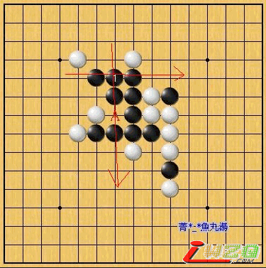

简单的禁手问题
#1 简单的禁手问题 作者：有志青年 发表时间：2007-4-7 14:11:31
请看下图。
如上图所示，A点是否為黑的禁手？
接著请看下图。
如上图所示，A、B点都是禁手吗？
以上两图，请有兴趣的网友们思考看看，也请在回答之餘顺便附上您的看法，光回答是或不是毕竟没有多大意义。
#2 简单的禁手问题之分析 作者：有志青年 发表时间：2007-4-7 14:13:29
第一个图的确是禁手，因為即使是４３３还是算３３禁手；
我们来看第二个图︰

请看上图，黑1乍看之下是双活三的禁点。
判断是否為禁点，我们必须对黑1所形成的两个三是否為活三来做个检查。
首先，横向的三绝对是活三，这点我想是没有什麼问题；至於直向的三呢？由於A点是四三三禁点的缘故，A点黑是不能下的。换句话说，这个直向的三不是活三。
所以，黑1只形成活三而已，不能算是禁手。
再来看上图，用同样的方式来做判断，可以发现这个黑1依然不能算是禁手。
总结就是，第二个图的A、B两个点都不是禁手。如果读者仍是半信半疑的话，请自行开啟黑石或连珠妙手来验证即可证明。
#3 Re:简单的禁手问题 作者：噩 发表时间：2007-4-16 17:10:56
讲的有点混乱,不大理解#4 Re:简单的禁手问题 作者：哈尔滨海 发表时间：2007-4-18 9:07:57
很清楚啊，长了知识。免得出去被人笑话
#5 Re:简单的禁手问题 作者：阿斯兰卡 发表时间：2007-4-20 4:40:05
第一张图的A是禁手！！原因是四三三
第二张图的AB都不禁！！原因是无论走AB哪两个点，黑只有一个活三，就是横向的活三，而纵向的那点，也就是第一张图所标示的A点是四三三禁，黑不能走的！
#6 Re:简单的禁手问题 作者：gerbo 发表时间：2007-5-6 21:05:03
 偶还是分不清～～
偶还是分不清～～
#7 Re:简单的禁手问题 作者：ieaor 发表时间：2007-5-23 19:24:09

呵 分析的很有道理呢
#8 Re:简单的禁手问题 作者：5子~学遥 发表时间：2007-8-28 16:16:01
恩！终于懂了！~~`#9 Re:简单的禁手问题 作者：【弈缘】狂人 发表时间：2007-8-29 18:57:38
简单 易懂 向楼主学习 向楼主致敬
#10 Re:简单的禁手问题 作者：尧军 发表时间：2009-8-25 13:52:55
非常好 很有价值#11 Re:简单的禁手问题 作者：山巅一士 发表时间：2009-9-14 16:03:02
貌似第一个也不是禁点吧
#12 Re:简单的禁手问题 作者：花瀑葬 发表时间：2010-6-2 13:27:33
很好，正困惑呢，看了懂了，谢谢